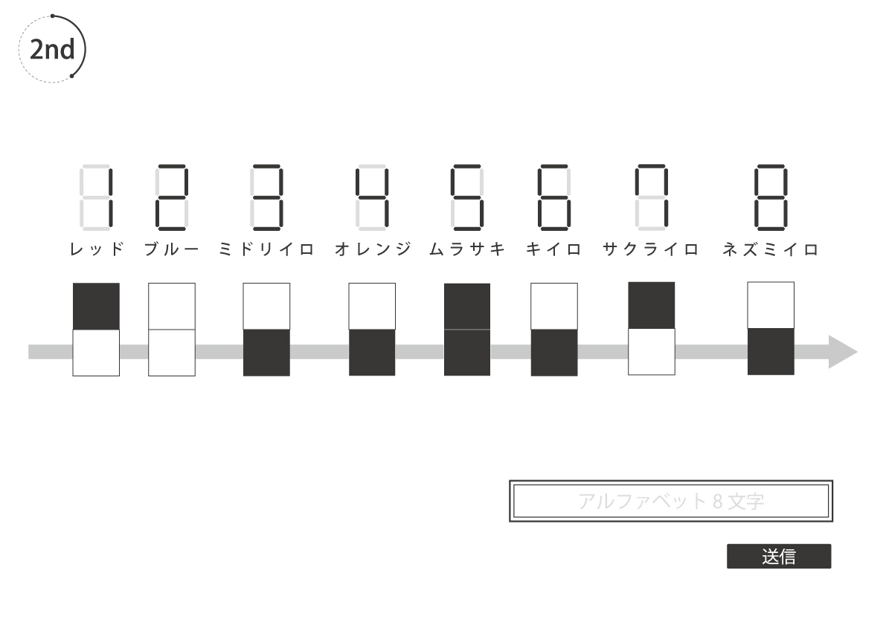

ヒントはこちら
第1ヒント
1stでは1から8までの数字を英語で表しましたが、2ndでは1から8までの数字を違う表現で表します。
第2ヒント
1から8までの数字を表すためには、1stの答えを使います。
第3ヒント
画面中の数字をこのように変化させて考えてみましょう。
第4ヒント
2枚のパネルを上下に並べて、1だったら赤のセグメント、2だったら青のセグメントで数字を1から8まで作ります。答えは矢印が通るアルファベット8文字の英単語です。